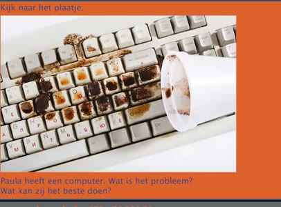
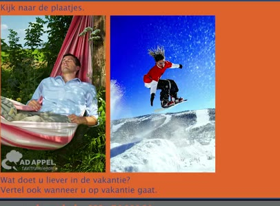
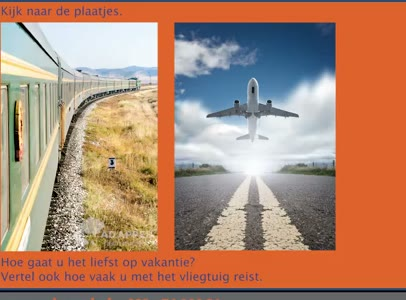
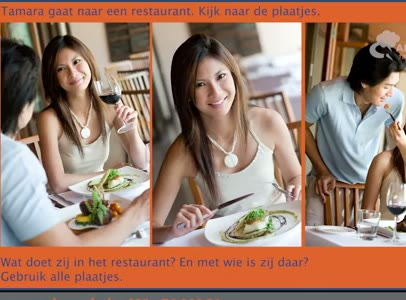
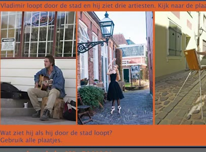

🔊 6 題 🖼️ 6 題 | YouTube ▶
🗣 Ik vind het leuk om een cadeautje te krijgen. Vindt u het leuk om cadeautjes te krijgen? Vertel ook wat u het leukst vindt om te krijgen.
我喜歡收到小禮物。 您喜歡收到禮物嗎？ 也請說說您最喜歡收到什麼。
Ik vind het ook leuk om cadeautjes te krijgen. Ik vind bloemen leuk. Ik woon in Rotterdam.
我也很喜歡收到禮物。 我喜歡花。 我住在鹿特丹。
🗣 In welke stad woont u nu en sinds wanneer woont u daar?
您現在住在哪個城市？您從什麼時候開始住在那裡？
Ik woon in Almere. Ik woon daar sinds 2013. Mijn hobby is boeken lezen.
我住在阿爾梅勒。我從2013年開始住在那裡。 我的興趣是看書。
🗣 Wat doet u het liefst in uw vrije tijd?
您最喜歡在空閒時間做什麼？
Ik kijk graag naar een goede film. Ik vind Chinees een heel moeilijke taal.
我喜歡看一部好電影。 我覺得中文是一門很難的語言。
🗣 Vindt u Nederlands een moeilijke taal? En hoe lang leert u al Nederlands?
您覺得荷蘭語難嗎？ 您學荷蘭語多久了？
Ik vind Nederlands heel moeilijk. Ik leer al drie jaar Nederlands. Mijn kinderen gaan naar de basisschool.
我覺得荷蘭語很難。 我已經學了三年荷蘭語。 我的孩子們上小學。
🗣 Wat weet u van de Nederlandse basisschool?
您知道荷蘭的小學是怎麼樣的嗎？
De basisschool is voor kinderen van 4 tot 12 jaar. Kinderen gaan naar school zonder uniform. Jongens en meisjes zitten samen in één klas.
小學是給4到12歲的孩子。 孩子們上學不穿制服。 男孩和女孩同班上課。
🗣 Ik ben leraar Nederlands. Wat is uw beroep en hoe lang bent u dat al?
我是荷蘭語老師。 您的職業是什麼？您做這份工作多久了？
Ik ben schoonmaker. Ik ben al drie jaar schoonmaker.
我是清潔工。我做清潔工作已經三年了。

🗣 Kijk naar het plaatje. Paula heeft een computer. Wat is het probleem? Wat kan zij het beste doen?
請看圖片。 Paula 有一台電腦。問題是什麼？ 她最好的做法是什麼？
De koffie valt op het toetsenbord. Zij moet een nieuw toetsenbord kopen.
咖啡倒在鍵盤上了。 她應該買一個新的鍵盤。
🗣 Kijk naar het plaatje. Vincent krijgt veel e-mails. Wat gaat hij volgens u doen met deze e-mails? Wat doet u zelf met uw e-mails?
請看圖片。 Vincent 收到很多電子郵件。 您認為他會怎麼處理這些郵件？ 您自己怎麼處理您的電子郵件？
Vincent leest zijn e-mails. Ik gooi mijn e-mails weg.
Vincent 會讀他的電子郵件。 我會把電子郵件刪掉。

🗣 Kijk naar de plaatjes. Wat doet u liever in de vakantie? Vertel ook wanneer u op vakantie gaat.
請看圖片。 您在假期比較想做什麼？ 也請說您什麼時候去旅遊。
Kijk naar de plaatjes. Ik wil veel slapen in de vakantie. Ik ga het liefst in de zomer.
請看圖片。我想在假期多睡覺。 我最喜歡夏天去旅遊。

🗣 Kijk naar de plaatjes. Hoe gaat u het liefst op vakantie? Vertel ook hoe vaak u met het vliegtuig reist.
請看圖片。 您最喜歡怎麼去旅遊？ 也請說您多久搭飛機旅行一次。
Ik ga liever met de trein. Ik reis nooit met het vliegtuig.
我比較喜歡搭火車去。 我從不搭飛機旅行。

🗣 Tamara gaat naar een restaurant. Kijk naar de plaatjes. Wat doet zij in het restaurant? En met wie is zij daar? Gebruik alle plaatjes.
Tamara 去餐廳。請看圖片。 她在餐廳做什麼？她和誰在那裡？ 使用所有圖片。
Zij eet iets lekkers. Zij drinkt rode wijn. Zij is met haar broer. Vladimir loopt door de stad en hij ziet drie artiesten.
她吃一些美味的東西。她喝紅酒。 她和她的哥哥一起。 Vladimir 走在城市裡，他看到三位藝人。

🗣 Kijk naar de plaatjes. Wat ziet hij als hij door de stad loopt? Gebruik alle plaatjes.
看圖片。 他走在城市裡時看到什麼？使用所有圖片。
Hij ziet iemand die muziek maakt. Hij ziet iemand die danst. En hij ziet iemand die schildert.
他看到有人在演奏音樂。 他看到有人在跳舞。 他還看到有人在畫畫。